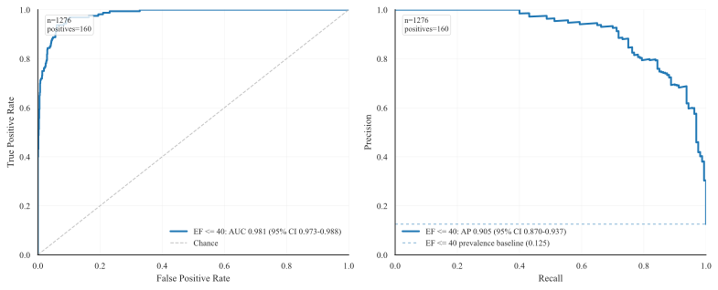
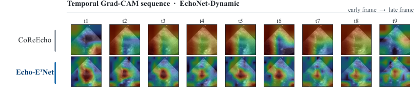

Left ventricular ejection fraction (LVEF) is a primary marker of cardiac function. However, routine estimation from endocardial measurements requires manual delineation at end-diastole (ED) and end-systole (ES), a process that is time-consuming and subject to inter-observer variability. Reliable automation is especially valuable for point-of-care ultrasound (POCUS), where computational resources are limited and acquisition quality varies. We propose Echo-E³Net, an anatomy-guided spatio-temporal network that explicitly embeds cardiac anatomy into LVEF prediction. A dual-phase Endocardial Border Detector (E²CBD) uses phase-specific cross-attention to localize ED/ES endocardial landmarks and produce phase-aware landmark embeddings, while an Endocardial Feature Aggregator (E²FA) fuses these embeddings with global statistical descriptors of deep feature maps to refine EF regression. Training is guided by a lightweight geometric loss that uses ED and ES endocardial landmarks to regularize EF prediction. On EchoNet-Dynamic and a PSAX subset of EchoNet-Pediatric, Echo-E³Net attains competitive performance using only 1.55M parameters and 8.05 GFLOPs, an order-of-magnitude compute reduction versus recent baselines, supporting real-time deployment. Our code is publicly available at https://github.com/moeinheidari7829/Echo-E3Net.
| Model | Frames | FLOPs | Params | MAE ↓ | RMSE ↓ | R2 ↑ |
|---|---|---|---|---|---|---|
| UVT [14] | 128 | 130.00G | - | 5.95 | 8.38 | 0.52 |
| MC3 [12] | 32 | 97.656G | - | 4.45 | 5.68 | 0.76 |
| EchoGNN [8] | 64 | - | 1.7 | 4.45 | - | 0.77 |
| EchoNet-Dynamic [12] | 32 | 91.974G | 32 | 4.22 | 5.56 | 0.79 |
| EchoGraphs [18] | 16 | 40.739G | 27.6 | 4.01 | 5.36 | 0.81 |
| EchoCoTr [9] | 36 | 44.907G | 21 | 3.98 | 5.34 | 0.81 |
| CoReEcho [6] | 36 | 58.92G | 21 | 3.90 | 5.13 | 0.82 |
| CardiacNet [20] | 16 | 7949G | 28 | 3.83 | - | - |
| Echo-E3Net (Ours) | 64 | 8.05G | 1.55 | 3.92 | 5.20 | 0.82 |
| Component | Metric | ||||||
|---|---|---|---|---|---|---|---|
| E2CBD | E2FA | L_pts | LB | LH | MAE ↓ | RMSE ↓ | R2 ↑ |
| ✔ | ✔ | ✘ | ✔ | ✔ | 3.98 | 5.30 | 0.81 |
| ✔ | ✔ | ✔ | ✘ | ✔ | 4.00 | 5.31 | 0.81 |
| ✔ | ✔ | ✔ | ✔ | ✘ | 3.95 | 5.29 | 0.81 |
| ✘ | ✔ | – | – | – | 4.05 | 5.40 | 0.80 |
| ✔ | ✘ | ✔ | ✔ | ✔ | 4.01 | 5.31 | 0.81 |
| ✔ | ✔ | ✔ | ✔ | ✔ | 3.92 | 5.20 | 0.82 |
| Model | Params | MAE ↓ | R2 ↑ |
|---|---|---|---|
| EchoGNN [8] | 1.7 M | 5.18 | 0.44 |
| EchoCoTr [9] | 21 M | 4.13 | 0.70 |
| CoReEcho [6] | 21 M | 4.44 | 0.67 |
| Echo-E3Net | 1.55 M | 3.88 | 0.73 |


@article{heidari2025echoenet,
title = {Echo-E$^3$Net: Efficient Endocardial Spatio-Temporal Network for Ejection Fraction Estimation},
author = {Heidari, Moein and Bozorgpour, Afshin and Zarif-Fakharnia, AmirHossein and Chen, Wenjin and Merhof, Dorit and Foran, David J. and Grewal, Jasmine and Hacihaliloglu, Ilker},
journal = {arXiv preprint arXiv:2503.17543},
year = {2025}
}